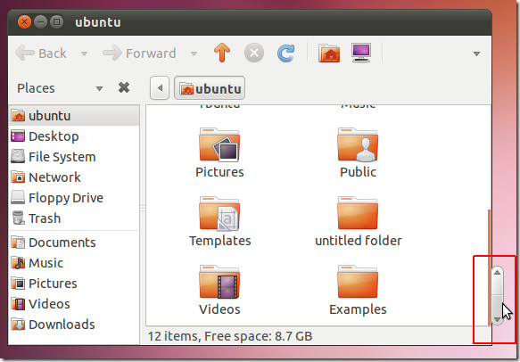

catscape navigator 2.0 
google docs (current)  |
What happens when the page fits the viewport? |
How do you fit a scrollbar with no space? |
Alphabetic Scroll bar for ios |
Scrolling not affecting fixed position elements. |
Over scrolling. |
Do sliders work for parallax? |
 |
Double Scrollbar |
 are these scrollbars if they have 4 "stops", |
Looks like a scrollbar but doesn't have the same function. |
|
 Premier scrollbar defines content. |
|
 Tracks movement through content in different way. |
 Tracks movement through content in different way. |
 |
|
No scrollbar but still scrolls for mobile. |
 |
 Content aware scrollbar shows spelling mistakes |
 |
|  | |
 < < |
Skyrim UI mod, ui outside og web |